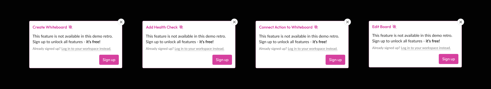
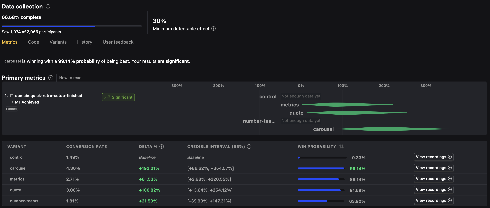
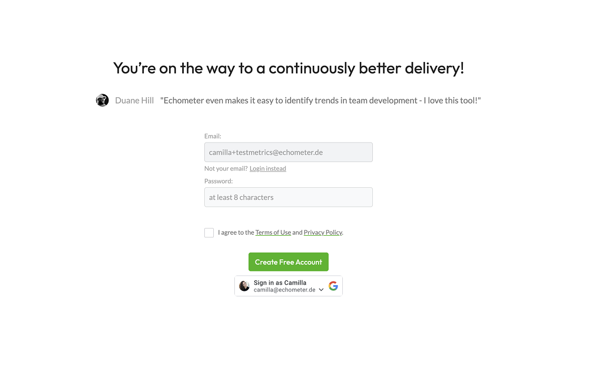
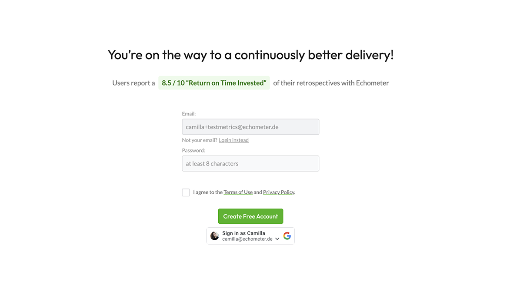
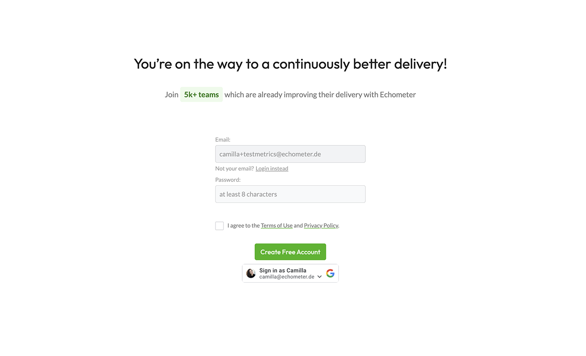
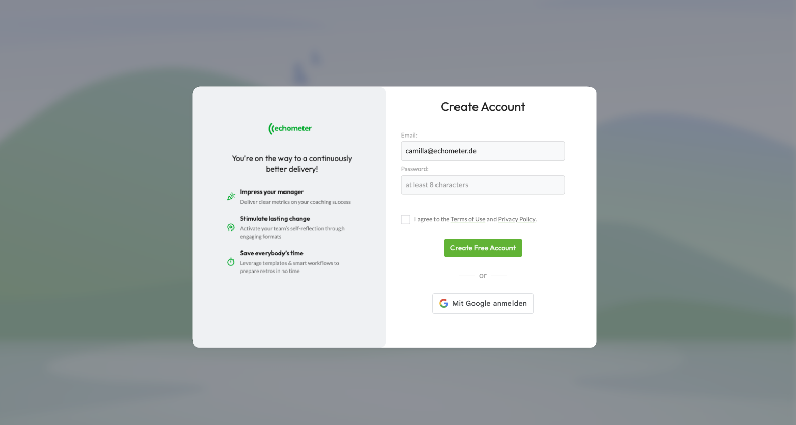
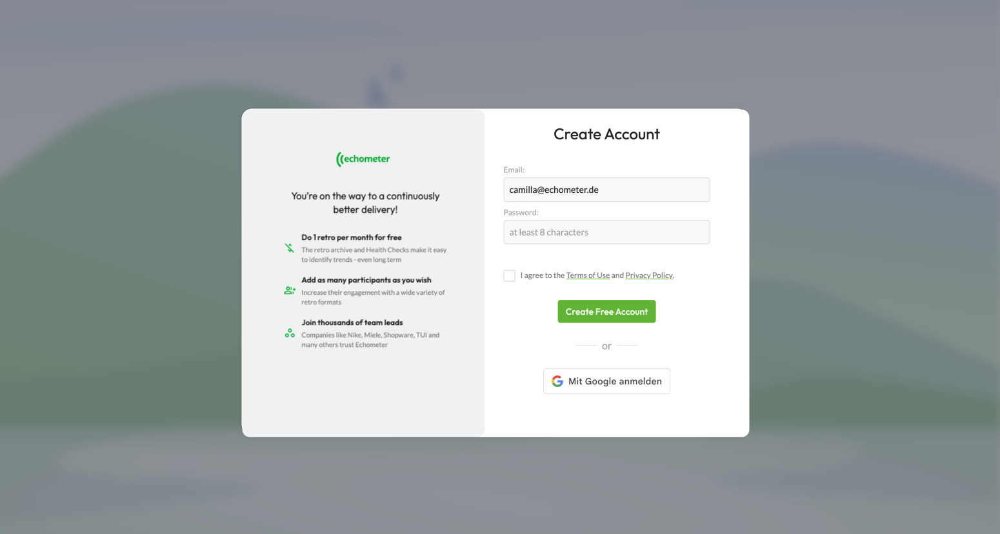
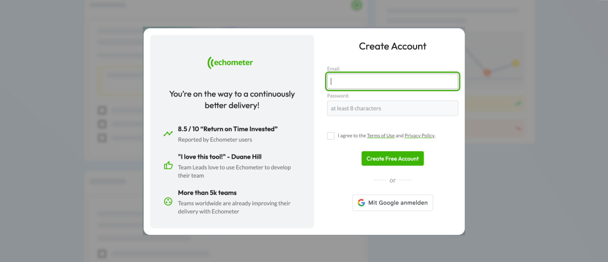
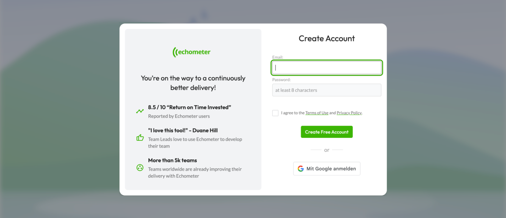

Designer specializing in complex B2B SaaS and developer-adjacent products. I deliver end-to-end product design and ship work that moves metrics. Open to remote-first roles in EU and US time zones.








